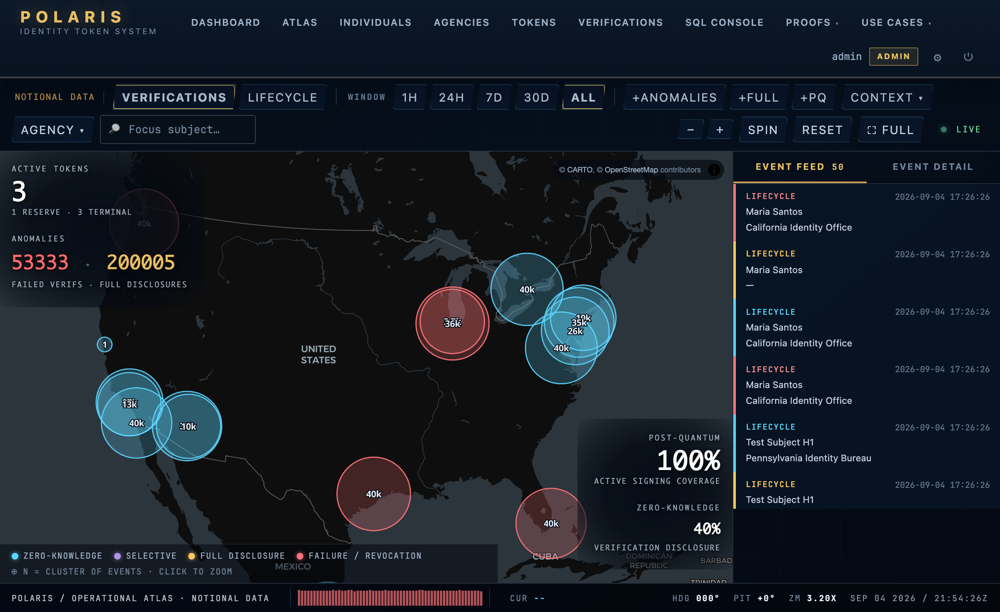
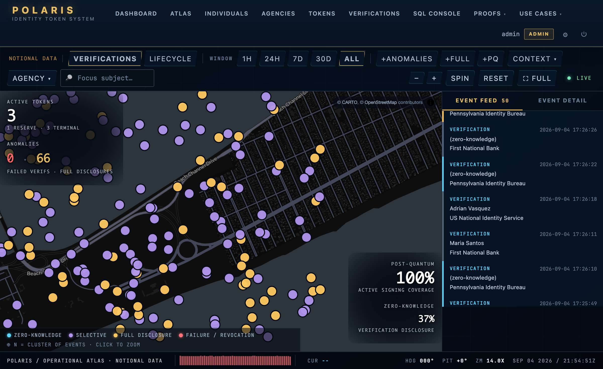
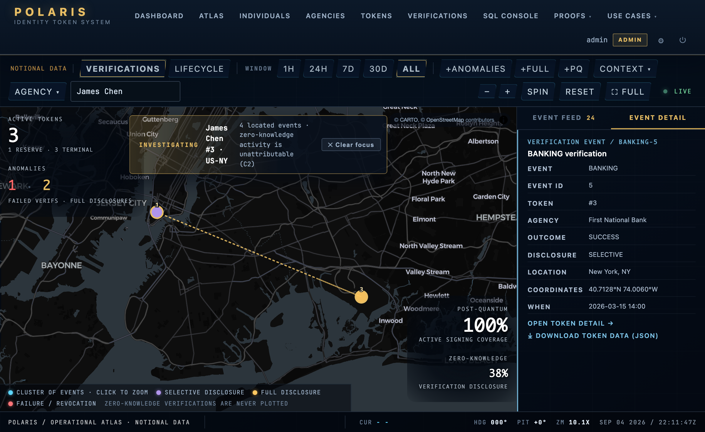

ML-DSA-65 default
NIST FIPS 204 lattice signatures, Level 3, on every new token from day one. Real bytes via liboqs, verified by two independent witnesses.
A working reference implementation of a post-quantum, zero-knowledge, compulsion-resistant national identity-token system.
Educational project · notional data only
Fixus inter mutabilia · fixed amid the mutable
29 schema tables · 72 routes · 114 machine-checked invariants · ML-DSA-65 signing default · X25519MLKEM768 TLS edge · Plonky2 ZK + second witness



Above all ten sits the vocation: no person can be compelled to renounce, transfer, or surrender their identity against their will. Each guarantee is enforced in the database, where no client can bypass it, and machine-checked on every change.
Append-only history. Triggers reject any UPDATE or DELETE on the audit tables. What happened, stays.
Zero-knowledge means zero. A CHECK constraint refuses to store a token id on a zero-knowledge verification.
One active token per person. A partial unique index makes a second ACTIVE row impossible, under any concurrency.
Atomic lockout counting. Failed logins increment in a single statement; there is no check-then-act race.
No inline scripts. Content-Security-Policy is script-src 'self', verified per route.
Server-side disclosure. A client cannot upgrade what a verification reveals; redaction is tested at every read path.
No hardcoded crypto. Algorithms are rows in a registry; rotation is an INSERT, not a redeploy.
Bounded aggregates. Every map and API result set carries a hard cap; payload scales with the viewport, not the ledger.
Real concurrency tests. Race-prone paths are tested with real threads against a live database, not mocks.
Identity is not money. The schema carries no monetary claim; the boundary is structural, not policy.
Consolidating six credentials into one token is the easy half. The interesting half is what happens when an adversary shows up. Six answered by construction, at the database layer, not in policy.
"Sign this or I break your fingers." The holder cannot refuse without injury.
A second secret produces an indistinguishable verification that silently records a DuressEvent. The coercer's view is pixel-identical to success.
Token lost, holder unidentified, nothing to prove who they are.
A two-phase ceremony gated by independent out-of-band channels, a cooldown, and an admin-only decision. Compromising one channel is not enough.
Today's signing algorithms break overnight when a quantum computer arrives.
Tokens carry classical AND post-quantum signatures simultaneously during cutover, with a hard database rule that exactly one is active. The default is already post-quantum.
One agency issues tokens that masquerade as any other agency's.
Explicit-only federation; no transitive trust. Every cross-agency verification gates on an active trust attestation row.
"Prove this token was in the ledger" without revealing which one.
A Plonky2 proof over a Merkle commitment answers membership and nothing else. The verification graph cannot be reconstructed from zero-knowledge events.
An agency revokes tokens at industrial scale, outside policy.
A per-agency revocation-rate ceiling enforced by trigger, sanctioned by a policy row, audited under an advisory lock.
Every claim on this page is backed by a gate that fails if the claim stops being true. CI does not just run tests; it exercises the artifacts.
measured at v9.194
No hardcoded algorithms anywhere: the signing algorithm is a foreign key to a first-class registry. Rotation is a row update, not a redeploy.
NIST FIPS 204 lattice signatures, Level 3, on every new token from day one. Real bytes via liboqs, verified by two independent witnesses.
FIPS 205 hash-based signatures rest on different assumptions than lattices, so both parameter sets are rows in the algorithm registry and a rotation is a row update. No SLH-DSA signer is wired yet; that gap is on the ledger in PQC-POSTURE.md.
FRI-based, transparent setup. Proves epoch membership without revealing which token. The epoch root is recomputed bit-for-bit by an independent Python witness.
The public edge negotiates X25519MLKEM768 hybrid key exchange; CI proves the handshake on every push. What stays classical is mapped honestly in PQC-POSTURE.md.
Constant-time comparison; the coerced flow is indistinguishable on every operator surface. Only the append-only audit trail knows.
Admin accounts enroll a FIDO2 credential against a per-account deadline; once enrolled, or once the deadline passes, a password alone cannot reach the admin role. The relying party offers ML-DSA-65 first.
git clone https://github.com/EgorKhaklin/polaris-id.git polaris
cd polaris
./Polaris.command./scripts/polaris-generate-secrets.sh
export POLARIS_DOMAIN=polaris.example.com
./scripts/polaris-deploy.sh prod
curl -fsS https://$POLARIS_DOMAIN/api/healthEducational reference implementation for Seton Hill University, Spring 2026. Notional data only; not a real identity system.